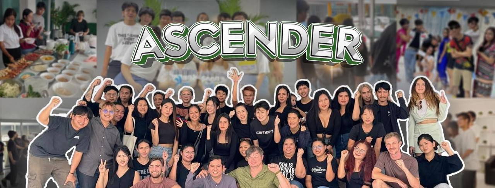

"บริษัท แอสเซนเดอร์ จำกัดเราเป็นผู้นำในด้านการส่งเสริมสำหรับผู้รักสุขภาพและเป็นทางเลือกสำหรับผู้สรรหาผลิตภัณฑ์คุณภาพระดับสากล ตลอดระยะเวลา 7 ปีที่ผ่านมา
แอสเซนเดอร์ได้ส่งมอบประสบการณ์ด้านสุขภาพอันยอดเยี่ยมให้แก่ลูกค้าผู้มีอุปการะคุณทุกท่าน ทางเรามีความมุ่งมั่นที่จะช่วยเหลือผู้คนในทุกช่วงวัย หากคุณเป็นหนึ่งในคนที่ใส่ใจสุขภาพ
อยากมีร่างกายที่แข็งแรง เยาว์วัย และเป็นมังสวิรัติ เปิดโอกาสให้แอสเซนเดอร์ ได้เป็นหนึ่งในทางเลือกด้านสุขภาพของคุณ
คำขวัญของบริษัทเราคือ ""ความมั่นคง ความน่าเชื่อถือ และประสิทธิภาพ""ขณะนี้เรากำลังเปิดรับสมาชิกใหม่เข้าร่วมเป็นครอบครัวแอสเซนเดอร์"